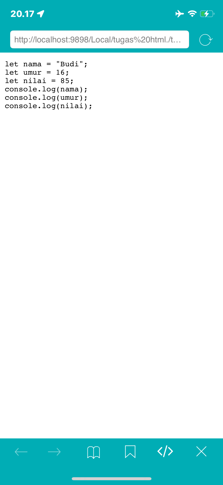
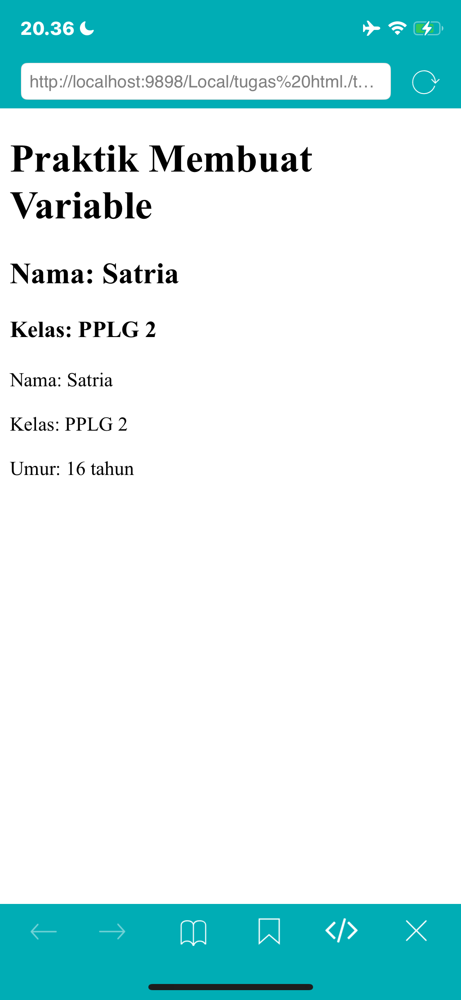
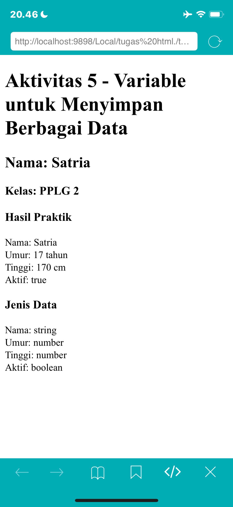
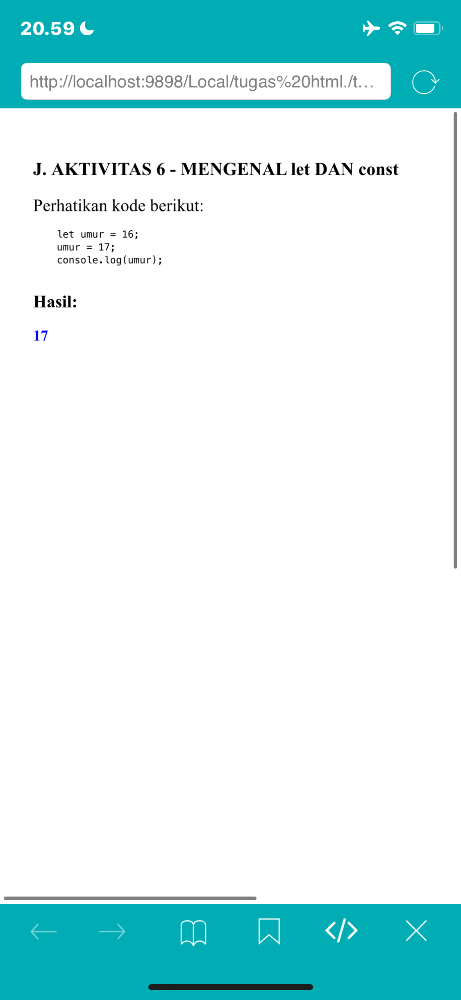
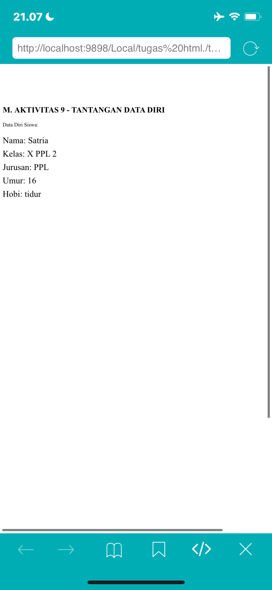
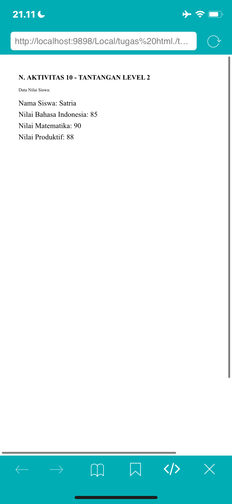
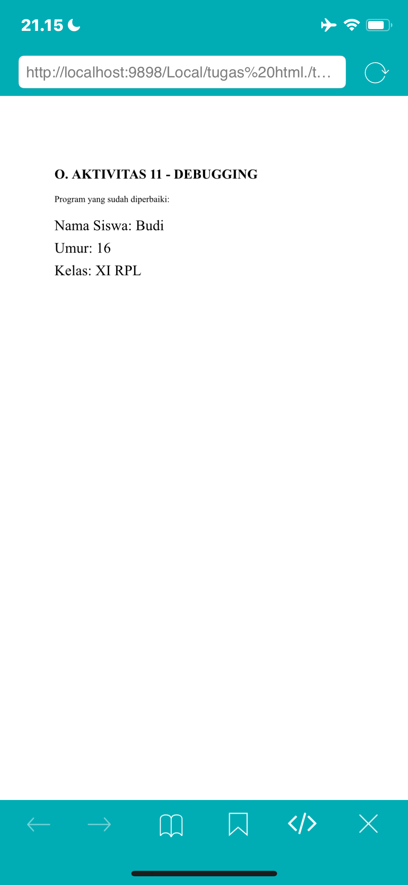
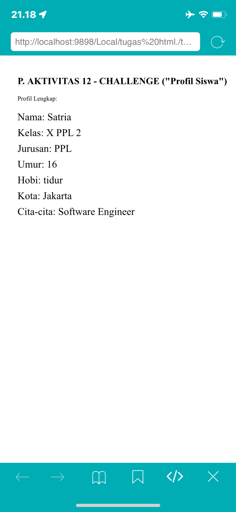

Identitas Pembelajaran
Mata Pelajaran: Dasar-Dasar Pengembangan Perangkat Lunak dan Gim
Materi: Variable pada JavaScript
Alokasi Waktu: 2 × 45 menit
Model Pembelajaran: Problem Based Learning / Discovery Learning
Metode: Eksplorasi, praktik, diskusi, tanya jawab, refleksi
Tujuan Pembelajaran
Setelah menyelesaikan kegiatan pembelajaran ini, peserta didik diharapkan mampu:
- Menjelaskan pengertian variable dengan bahasa sendiri.
- Menjelaskan fungsi variable dalam program.
- Membedakan let dan const secara sederhana.
- Membuat variable menggunakan JavaScript.
- Memberikan nama variable sesuai aturan penamaan.
- Menyimpan data berupa teks dan angka ke dalam variable.
- Menampilkan nilai variable menggunakan
console.log(). - Membuat program JavaScript sederhana yang menggunakan beberapa variable.
- Menemukan dan memperbaiki kesalahan sederhana pada penggunaan variable.
Petunjuk Keselamatan dan Kerja
Dalam kegiatan praktik:
- Gunakan komputer/laptop dengan hati-hati.
- Jangan menghapus file milik teman.
- Simpan pekerjaan secara berkala.
- Jangan menyalin kode teman tanpa memahami fungsinya.
- Jika menemukan error, jangan panik.
- Baca pesan error dan diskusikan penyebabnya.
- Setiap anggota kelompok harus memahami hasil pekerjaan kelompok.
Apersepsi
Bayangkan kamu sedang membuat aplikasi data siswa. Program perlu mengetahui nama siswa, kelas, umur, nilai, dan jurusan.
Contohnya:
Nama siswa = "Budi" Kelas = "XI RPL 1" Umur = 16 Nilai = 85
Menurutmu, bagaimana cara menyimpan informasi tersebut di dalam program?
Aktivitas 1 — Mengamati
Perhatikan kode berikut dan jalankan menggunakan browser.
let nama = "Budi"; let umur = 16; let nilai = 85; console.log(nama); console.log(umur); console.log(nilai);
Pertanyaan dan Jawaban
1. Apa yang ditampilkan pada Console?
16
85
2. Menurutmu, apa fungsi nama, umur, dan nilai?
3. Apa yang terjadi jika kode console.log(nama); dijalankan?
4. Menurut dugaanmu, apa yang dimaksud dengan variable?
Dokumentasi Pengamatan

Aktivitas 2 — Mengenal Variable
1. Apa itu Variable?
Variable dapat dianggap sebagai tempat untuk menyimpan sebuah data agar data tersebut dapat digunakan kembali oleh program.
let nama = "Andi";
Dapat dibayangkan seperti sebuah kotak bernama nama yang menyimpan nilai "Andi".
| Bagian | Fungsi |
|---|---|
let | Membuat variable. |
nama | Nama variable. |
= | Memberikan nilai. |
"Andi" | Nilai yang disimpan. |
Aktivitas 3 — Praktik Membuat Variable
Buat file bernama variable.html, masukkan kode berikut, buka file menggunakan browser, lalu pilih Inspect → Console.
<!DOCTYPE html>
<html lang="id">
<head>
<meta charset="UTF-8">
<title>Belajar Variable</title>
</head>
<body>
<h1>Belajar Variable JavaScript</h1>
<p>Buka Inspect lalu pilih Console untuk melihat hasil.</p>
<script>
let nama = "Satria";
let kelas = "PPLG 2";
let umur = 16;
console.log(nama);
console.log(kelas);
console.log(umur);
</script>
</body>
</html>
Hasil Pengamatan
Kelas: PPLG 2
Umur: 16 tahun (contoh; sesuaikan dengan umur sebenarnya jika diperlukan).
Dokumentasi Praktik Bagian G

Aktivitas 4 — Eksperimen
Ubah nama, kelas, dan umur pada program sesuai data diri. Pada kode di atas, nama sudah diubah menjadi Satria dan kelas menjadi PPLG 2.
1. Apakah hasil pada Console berubah?
2. Bagian kode mana yang kamu ubah?
nama, kelas, dan umur.3. Mengapa program dapat menampilkan data yang baru?
Aktivitas 5 — Variable untuk Menyimpan Berbagai Data
JavaScript dapat menyimpan berbagai jenis data. Perhatikan:
let nama = "Andi"; let umur = 17; let tinggi = 170; let aktif = true;
| Variable | Nilai | Jenis Data |
|---|---|---|
| nama | "Andi" | String (teks) |
| umur | 17 | Number (angka) |
| tinggi | 170 | Number (angka) |
| aktif | true | Boolean (benar/salah) |
Data yang ditulis menggunakan tanda kutip seperti "Andi" merupakan data:
Sedangkan 17 merupakan data:
Dokumentasi Aktivitas 5
Praktik variable untuk menyimpan berbagai jenis data.

Aktivitas 6 — Mengenal let dan const
let umur = 16; umur = 17; console.log(umur);
Hasil:
const nama = "Budi"; nama = "Andi"; console.log(nama);
Apa yang terjadi?
Kesimpulan Sementara
| Keyword | Nilai dapat diubah? | Kegunaan sederhana |
|---|---|---|
| let | Ya | Untuk data yang masih mungkin berubah. |
| const | Tidak dapat diubah ulang | Untuk data yang nilainya tetap. |
Contoh let:
let nilai = 80; nilai = 90;
Contoh const:
const namaSekolah = "SMKN 1 Garut";
Dokumentasi Aktivitas 5
Praktik variable untuk menyimpan berbagai jenis data.
<Dokumentasi Aktivitas 5
Variable untuk Menyimpan Berbagai Data
Dokumentasi Aktivitas 5
Variable untuk Menyimpan Berbagai Data

Aktivitas 7 — Aturan Penamaan Variable
Contoh nama variable yang diperbolehkan:
let nama; let namaSiswa; let nama_siswa; let umur2;
Contoh yang tidak diperbolehkan:
let 1nama; let nama siswa; let nama-siswa;
JavaScript membedakan huruf besar dan kecil (case-sensitive). Jadi nama berbeda dengan Nama.
Aktivitas 8 — Mana yang Benar?
| No. | Nama Variable | Jawaban |
|---|---|---|
| 1 | nama | ✓ Benar |
| 2 | namaSiswa | ✓ Benar |
| 3 | nama_siswa | ✓ Benar |
| 4 | 2nama | ✗ Salah |
| 5 | nama siswa | ✗ Salah |
| 6 | nilaiAkhir | ✓ Benar |
| 7 | nilai1 | ✓ Benar |
| 8 | nilai-akhir | ✗ Salah |
| 9 | Alamat | ✓ Benar |
| 10 | alamatSiswa | ✓ Benar |
Perbaiki nama variable yang salah
2nama menjadi nama2.nama siswa menjadi namaSiswa.nilai-akhir menjadi nilaiAkhir.Aktivitas 9 — Tantangan Data Diri
Buat program JavaScript yang menyimpan nama, kelas, jurusan, umur, dan hobi. Gunakan minimal 5 variable.
Program versi saya:
let nama = "Satria"; let kelas = "PPLG 2"; let jurusan = "Pengembangan Perangkat Lunak dan Gim"; let umur = 16; let hobi = "Bermain game";console.log(nama); console.log(kelas); console.log(jurusan); console.log(umur); console.log(hobi);Dokumentasi Praktik
Hasil Praktik LKPD JavaScript Satria

Catatan: umur dan hobi dapat disesuaikan dengan data diri sebenarnya.
Aktivitas 10 — Tantangan Level 2
Buat program untuk menyimpan nama siswa, nilai Bahasa Indonesia, Matematika, dan Produktif.
let nama = "Satria"; let bahasaIndonesia = 85; let matematika = 85; let produktif = 90; console.log(nama); console.log(bahasaIndonesia); console.log(matematika); console.log(produktif);
1. Berapa variable yang kamu buat?
2. Mana variable yang menyimpan teks?
nama.3. Mana variable yang menyimpan angka?
bahasaIndonesia, matematika, dan produktif.Dokumentasi Praktik Bagian N
Hasil Praktik LKPD JavaScript Satria

Aktivitas 11 — Debugging
Program berikut memiliki beberapa kesalahan:
let nama siswa = "Budi"; let umur = 16; let 2kelas = "XI RPL"; console.log(nama siswa); console.log(umur); console.log(2kelas);
Program yang sudah diperbaiki
let namaSiswa = "Budi"; let umur = 16; let kelas2 = "XI RPL"; console.log(namaSiswa); console.log(umur); console.log(kelas2);
Apa saja kesalahan yang kamu temukan?
nama siswa mengandung spasi, seharusnya namaSiswa.2. Nama variable
2kelas diawali angka, seharusnya kelas2.3. Penulisan pada console.log() harus sama persis dengan nama variable yang sudah diperbaiki.
Dokumentasi Praktik Bagian O
Hasil Praktik Debugging JavaScript

Aktivitas 12 — Challenge: Program Profil Siswa
Buat program yang menyimpan nama, kelas, jurusan, umur, kota, hobi, dan cita-cita. Tambahkan minimal 2 variable baru.
const nama = "Satria"; const kelas = "PPLG 2"; const jurusan = "Pengembangan Perangkat Lunak dan Gim"; const umur = 16; const kota = "Garut"; const hobi = "Bermain game"; const citaCita = "Programmer"; // Dua variable tambahan const sekolah = "SMKN 1 Garut"; const makananFavorit = "Mie ayam"; console.log(nama); console.log(kelas); console.log(jurusan); console.log(umur); console.log(kota); console.log(hobi); console.log(citaCita); console.log(sekolah); console.log(makananFavorit);
Variable tambahan:
2. makananFavorit
Dokumentasi Praktik Bagian P
Hasil Praktik Challenge Profil Siswa

Aktivitas 13 — Think Pair Share
Think — Menurutmu, mengapa programmer membutuhkan variable?
Pair — Apakah jawaban kalian sama?
Jika berbeda, apa perbedaannya?
Share — Tuliskan kesimpulan kelompok:
Refleksi
Berikan tanda sesuai dengan pemahamanmu. Bagian ini sengaja disiapkan sebagai bentuk dasar untuk diisi sendiri.
| Pernyataan | Belum Paham | Mulai Paham | Paham |
|---|---|---|---|
| Saya memahami pengertian variable | ☐ | ☐ | ☐ |
| Saya dapat membuat variable dengan let | ☐ | ☐ | ☐ |
| Saya memahami penggunaan const | ☐ | ☐ | ☐ |
| Saya dapat menyimpan data ke dalam variable | ☐ | ☐ | ☐ |
| Saya dapat menampilkan variable dengan console.log() | ☐ | ☐ | ☐ |
| Saya dapat memberikan nama variable dengan benar | ☐ | ☐ | ☐ |
| Saya dapat menemukan kesalahan variable | ☐ | ☐ | ☐ |